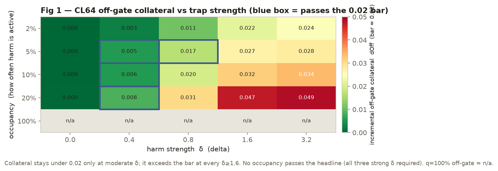
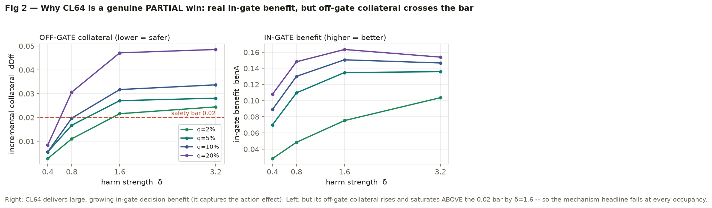
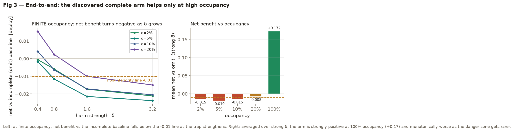
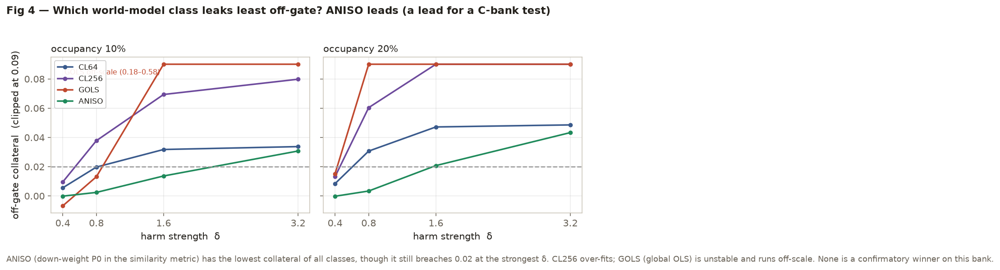

The context-local action estimator (CL64) is a genuine partial improvement, but it does not meet the pre-registered uniform strong-δ safety bar at any finite occupancy. CL64 captures the in-gate action effect (large, growing decision benefit) and cuts off-gate collateral far below the flat-kNN reference — passing the mechanism at moderate δ — but its incremental off-gate collateral rises and saturates above the 0.02 bar by δ=1.6, so the mechanism headline is False at every occupancy. End-to-end, the discovered complete arm is net-superior only at high occupancy. On this fixed E2-ID bank, under the registered K0–K2 pipeline and planner, residual world-model off-gate generalization remains the binding constraint — discovery is not.
Thread A (the gated decision-MDE study, 2026-09-15) established that complete causal fan-out prevents the harmful shared-knob action where it is active, but the net all-deployment benefit is occupancy-dependent and washes out at low occupancy because the learned world-model inflicts off-gate collateral. A pilot diagnostic isolated the mechanism: a flat k-NN K5 model mixes the action axis (P0) with context (P6,P7), so sweeping P0 shifts which neighbours are selected and injects fake off-gate P0-dependence. Thread B is the confirmatory test of a candidate fix.
Both are fixed-B-bank confirmatory claims (uncertainty over the discovery draw conditional on the frozen S_eval-B), not population or E5 claims.
EQ=TOL=IN_ABS=0.02, IN_REL=0.50,
NI=0.01, FRAC=0.80; headline = AND over strong δ {0.8,1.6,3.2}; paired seed
bootstrap n=10000. Anchors B-A0…B-A4 verified pre-score (primary CL anchors exact; B-A0 col-13 and
secondary-ANISO B-A4 carry documented waivers — see §5). Frozen A-machinery (SCM, M3, regret) reused
byte-identical; deploy metric uses the fresh realized occupancy occ_B[q].

CL64’s incremental off-gate collateral stays under the 0.02 bar only at moderate trap strength. At δ≥1.6 it
exceeds the bar at every occupancy (q=5%: 0.027→0.028; q=10%: 0.032→0.034; q=20%: 0.047→0.049), and the seed
fraction frac_M collapses to ~0 in all six q≥5%, δ≥1.6 cells. The shape is nonlinear,
increasing, and saturating by δ≈1.6 (not super-linear). Because the headline requires passing at all
of {0.8,1.6,3.2}, the mechanism verdict is fail at every occupancy.


The end-to-end headline is False at all finite occupancy (net vs omit turns negative as off-gate collateral dominates deploy at low occupancy). q=100% is a REFERENCE row (off-gate is NOT_APPLICABLE; never a B-success cell per PREDECLARE_B §4) — its strong positive values (+0.13…+0.18) are reference evidence of in-gate efficacy, not a success. Discovery is reliable: M3 declares P0→K5 in 800/1000 cells (100% wherever δ is material; the 200 non-declarations are δ=0 / tiny-δ cells, correctly dispatched to the omit arm).

Descriptive only (no pass/fail, no multiplicity). ANISO is the interesting lead for a future estimator — e.g. q=20%/δ=0.8: ANISO 0.003 vs CL64 0.031; q=10%/δ=1.6: ANISO 0.014 vs CL64 0.032 — but it is not itself a confirmatory winner at δ=3.2 and must not be promoted on B. It is a hypothesis generator for a fresh-bank test.
Reproducibility: 3 cells re-run from scratch equal the stored records bit-exact
(max|Δ|=0.0). Manifest b8c1aa4dfe96 fail-closed verify OK; all 1000 records carry it.
The figures above are recomputed live from the raw records by make_figs.py; the headline
booleans match the scorer.
sol adversarial review (sol_B_result_review.md): the primary forced-track
mechanism negative is sound — no gate/evaluation leakage, correct signs and occupancy
weighting, forced track insulated from discovery and from the A3 defect. sol flagged conformance / reporting
defects that do not touch the primary negative but bound the end-to-end certification:
bad_disc seeds: the discovered CL path uses the
cached K0–K2 grids instead of recomputing them with the arm-specific / common warm-up. Measured incidence:
2/40 seeds (500029, 500030). It perturbs only discovered netOmit for those two
seeds (netNull / benA cancel K0–K2; the forced track uses oracle K0–K2 and is unaffected), and 2/40 cannot
flip an all-strong-δ headline failing by wide margins. Verified by erratum (2026-09-19):
implementing the A3 rollout literally (additive module, frozen harness byte-unchanged; bit-exact no-op on a
non-bad_disc seed) and rescoring shifted 39 cells' netOmit by at most 0.0081 (one seed of 40 →
cell-mean shift ~2e-4); the MECH and EE headlines are identical to the original. The
end-to-end track is now literally certified.<1e-9 → 1e-4 on col-13 cells (benign —
independently traced to a stale stored record; the current pipeline reproduces bit-exact); B-A4 ANISO argmax
0.49 accepted as co-maximal ties, and no per-scored-cell CPU-reference check ran. Primary CL anchors passed
strictly.b_run_sweep.py and b_score.py
(scratchpad untracked, so the dirty-diff hash does not cover them).The sharp, defensible claim: CL64’s learned P0 dependence does not generalize safely off-gate at the registered decision operating points. The residual off-gate collateral is real operational collateral of this learned K5 action model under this planner, not a scoring illusion. The broader "the world-model is the binding constraint" reading is licensed only with qualifiers: CL64 K5 action model, fixed K0–K2 pipeline, fixed planner, fixed E2-ID B bank — not all world-model classes (ANISO shows estimator class matters), and this is E2-ID evidence consistent with, not independent proof of, the occupancy-conditional E5 rationale.
Mechanism (forced CL64): incremental off-gate collateral, bootstrap upper bound, seed fraction. Bold δ are the strong set; MECH requires mean ≤ 0.02 and U95 ≤ 0.02 and frac ≥ 0.80.
| occ | δ=0.4 | δ=0.8 | δ=1.6 | δ=3.2 |
|---|---|---|---|---|
| 2% | .0027 / .12 / .00 | .0110 / .00 | .0216 / .33 | .0244 / .12 |
| 5% | .0055 / .82 | .0167 / .95 ✓ | .0270 / .00 | .0281 / .00 |
| 10% | .0055 / 1.0 | .0197 / .55 | .0317 / .00 | .0337 / .00 |
| 20% | .0084 / 1.0 | .0306 / .00 | .0471 / .00 | .0485 / .00 |
Cells show mean dOff / frac_M (δ=0.4 also lists U95 where near-bound). The single strong-δ pass is q=5%/δ=0.8.
End-to-end (discovered CL64): net vs omit / net vs own null / seed fraction N. EE requires both nets ≥ −0.01 (with bootstrap bound) and frac_N ≥ 0.80.
| occ | δ=0.8 | δ=1.6 | δ=3.2 |
|---|---|---|---|
| 2% | −.0059 / .53 | −.0173 / .20 | −.0212 / .17 |
| 5% | −.0116 / .35 | −.0215 / .00 | −.0239 / .00 |
| 10% | −.0064 / .85 | −.0172 / .05 | −.0205 / .03 |
| 20% | +.0024 / .85 | −.0100 / .82 | −.0150 / .65 |
| 100% (ref) | +.1731 / 1.0 | +.1807 / 1.0 | +.1626 / 1.0 |
Cells show mean netOmit / frac_N. No finite-q cell
clears all three strong δ. q=100% is a reference row, not a success. Full per-cell values in
figures_data.json.
bad_disc seeds rescored (see §5) — verdict unchanged, end-to-end track now
literally certified. Still outstanding (verdict-irrelevant, larger build): the A9 H-* 2×2 factorial,
the §5 spurious-P0-sensitivity / held-out-error diagnostics, and a per-cell CPU-equivalence pass.Do not retune EQ/NI/FRAC/the strong-δ set/k on B; do not add δ points to hunt a boundary. If no independently-motivated estimator can make that prediction, the sharper decision is to stop iterating in E2-ID and fold the corrected negative into the record.
scratchpad/design_adaptive_m3/gated_mde_B_records/ (1000 cells) ·
b_result.json, b_result_secondary.json, b_bad_disc_incidence.json,
b_spot_verify.json, sol_B_result_review.md, b_run_manifest.json
(content b8c1aa4dfe96). Figures regenerated live from the raw records by make_figs.py →
figures_data.json. DEV / truth-free; nothing frozen, committed, or promoted. reports/ is
gitignored by repo convention.